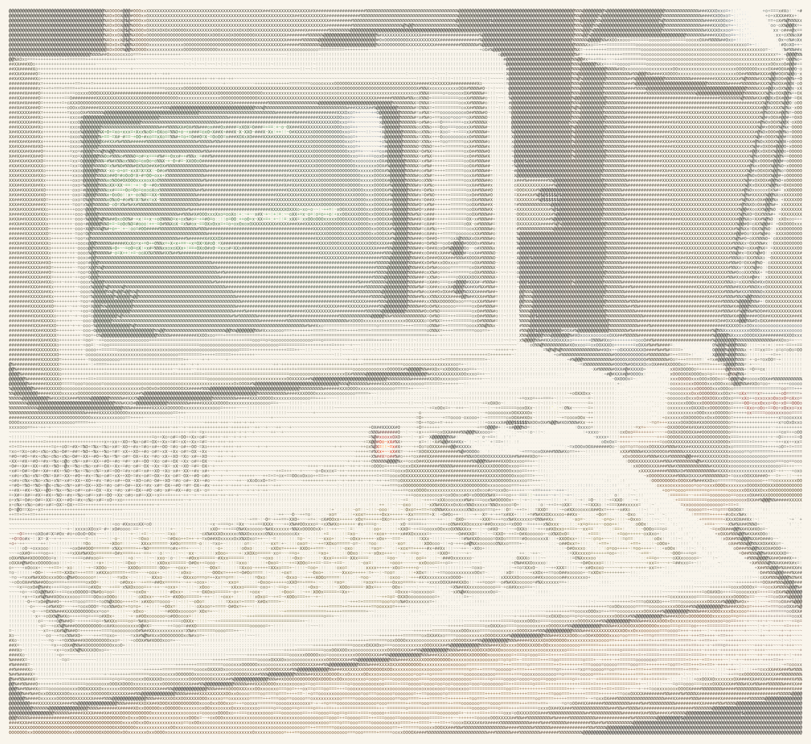

Soluciones LeetCode
#13 — Romano a entero
Mira adelante, resta y conquista — el decodificador de números romanos

Enunciado del problema
Los números romanos se representan mediante siete símbolos diferentes:
I,V,X,L,C,DyM.
Símbolo Valor I 1 V 5 X 10 L 50 C 100 D 500 M 1000 Por ejemplo,
2se escribe comoIIen números romanos, simplemente dos unos sumados.12se escribe comoXII, que es simplementeX + II. El número27se escribe comoXXVII, que esXX + V + II.Los números romanos generalmente se escriben de mayor a menor de izquierda a derecha. Sin embargo, el numeral para cuatro no es
IIII. En su lugar, el número cuatro se escribe comoIV. Como el uno está antes del cinco, lo restamos para obtener cuatro. El mismo principio se aplica al número nueve, que se escribe comoIX. Hay seis casos donde se usa la resta:
Ipuede colocarse antes deV(5) yX(10) para formar 4 y 9.Xpuede colocarse antes deL(50) yC(100) para formar 40 y 90.Cpuede colocarse antes deD(500) yM(1000) para formar 400 y 900.Dado un número romano, conviértelo a entero.
Ejemplo 1:
Ejemplo 2:
Ejemplo 3:
Restricciones:
1 <= s.length <= 15
scontiene solo los caracteres('I', 'V', 'X', 'L', 'C', 'D', 'M').- Se garantiza que
ses un número romano válido en el rango[1, 3999].
El enfoque ingenuo
La traducción más directa de las reglas: recorre de izquierda a derecha, mapea cada símbolo a su valor, y si ves un valor menor antes de uno mayor (como I antes de V), réstalo en lugar de sumarlo. Es un enfoque perfectamente válido y funciona de inmediato.
def romanoAEntero_ingenuo(s: str) -> int:
valores = {'I':1, 'V':5, 'X':10, 'L':50, 'C':100, 'D':500, 'M':1000}
total = 0
i = 0
while i < len(s):
# si el actual es menor que el siguiente, es un par sustractivo
if i + 1 < len(s) and valores[s[i]] < valores[s[i+1]]:
total += valores[s[i+1]] - valores[s[i]]
i += 2
else:
total += valores[s[i]]
i += 1
return total
Complejidad inicial
Esto ya es O(n) en tiempo y O(1) en espacio — solo tocamos cada carácter un par de veces. El código es claro y fácil de seguir. Pero el problema se vuelve aún más limpio cuando invertimos la perspectiva: en lugar de buscar pares, simplemente miramos hacia adelante y decidimos si el símbolo actual debe sumarse o restarse. Ese pequeño cambio elimina la necesidad de un índice que salte.
Una sola pasada más fluida
La observación clave: en números romanos, si un símbolo es seguido por uno de mayor valor, actúa como un restador. De lo contrario, suma. Así que podemos recorrer la cadena una vez, comparar el valor actual con el siguiente, y sumar o restar en consecuencia. El último símbolo siempre se suma porque no hay nada después de él.
Esta versión se lee casi como el proceso mental: “M es 1000, siguiente es C (100) que es menor, así que sumo 1000. C es 100, siguiente es M (1000) — mayor, así que resto 100…” Es elegante y usa solo una pasada sin saltos de casos especiales.
def romanoAEntero(s: str) -> int:
valores = {
'I': 1,
'V': 5,
'X': 10,
'L': 50,
'C': 100,
'D': 500,
'M': 1000
}
total = 0
n = len(s)
for i in range(n):
# si el valor actual es menor que el siguiente, réstalo
if i < n - 1 and valores[s[i]] < valores[s[i+1]]:
total -= valores[s[i]]
else:
total += valores[s[i]]
return total
Sigamos el ejemplo más complicado: s = "MCMXCIV" (1994).
| i | símbolo | valor | símbolo sig. | valor sig. | acción | total tras paso |
|---|---|---|---|---|---|---|
| 0 | M | 1000 | C | 100 | 1000 ≥ 100 → sumar | 1000 |
| 1 | C | 100 | M | 1000 | 100 < 1000 → restar | 900 |
| 2 | M | 1000 | X | 10 | 1000 ≥ 10 → sumar | 1900 |
| 3 | X | 10 | C | 100 | 10 < 100 → restar | 1890 |
| 4 | C | 100 | I | 1 | 100 ≥ 1 → sumar | 1990 |
| 5 | I | 1 | V | 5 | 1 < 5 → restar | 1989 |
| 6 | V | 5 | — | — | último símbolo → sumar | 1994 |
Observa cómo la resta de C (100) y la posterior suma de M (1000) se combinan para dar el neto +900 de CM. Lo mismo ocurre con XC (90) e IV (4).
Complejidad final
Complejidad temporal: O(n) — recorremos la cadena exactamente una vez, realizando una búsqueda en diccionario y una comparación de tiempo constante por carácter.
Complejidad espacial: O(1) — el tamaño del diccionario está fijo en 7 entradas, y usamos solo unas pocas variables enteras. Ninguna estructura adicional escala con la entrada.
Esta solución es rápida, eficiente en memoria y refleja exactamente cómo un humano experimentado analizaría un número romano: echar un vistazo adelante y decidir.
Feliz programación, y que tu complejidad siempre sea baja.
Referencias y lecturas adicionales
- Página del problema Roman to Integer en LeetCode — problema oficial y foros de discusión.
- Wikipedia: Numeración romana — historia, reglas y ejemplos más complejos.
- Real Python: Convertir números romanos con Python — un análisis más profundo con ambas direcciones (hacia y desde romano).
- GeeksforGeeks: Convertir números romanos a decimal — implementaciones alternativas en múltiples lenguajes.
¿No te cansas de lumænaut? Lee esto...
- Capítulo 2 | Todo lo que no sé sobre bloguear — la bitácora detrás del sitio: dominios, SEO, plugins y aprender en público.
- Los 8 paradigmas de algoritmos — ocho modelos mentales que reutilizarás en problemas, entrevistas y código en producción.
- Cómo funciona el bucle de juego — el latido de un fotograma de juego: actualizar, renderizar y temporización estable en lenguaje claro.